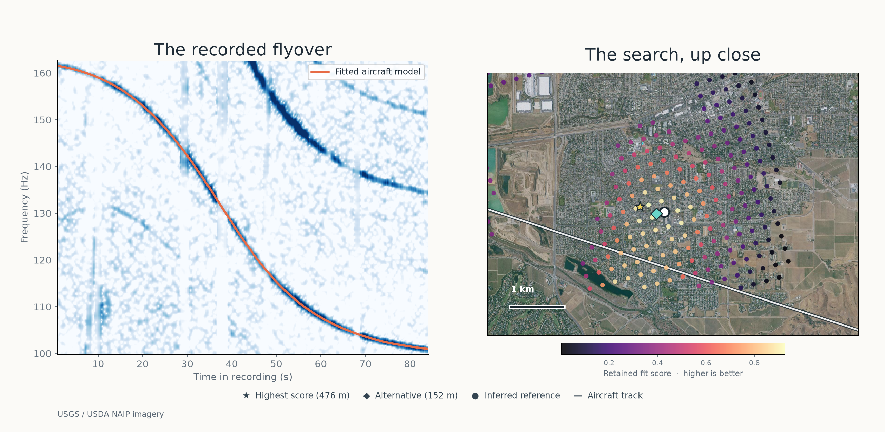
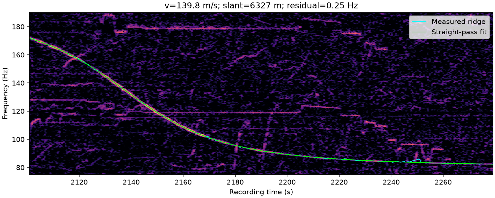

Find where a recording was made.
Aircraft leave tracks in the sky—and in the sound they make. DOPPLERGEIST matches Doppler signatures in recordings to historical flight paths to locate the microphone.

An MP3. A flyover. A geographic search.
A recorded aircraft tone matched against archived ADS-B trajectories and scored across possible microphone positions.

Constrained regional run with an approximately 10-second recording-time window. The reference point is inferred rather than surveyed ground truth.
The evidence is in the frequency shift.
Spectrograms, fitted Doppler curves, and ranked search positions. These are outputs from the code, not illustrations.



The curve and the map, together.
Measured frequency change on the left. Candidate search area and location scores on the right.

Bring your own recording.
DOPPLERGEIST accepts MP3 files, discovers candidate flyovers, retrieves historical aircraft tracks, and runs a geographic search. Use the command line or the local browser interface.
Historical matching needs a recording-time window. The analysis runs on your machine.
Install from GitHub ↗Can audio reveal where it was recorded?
Aircraft produce changing frequencies as they pass a microphone. Matching those curves to flight histories can narrow the recording location.
What flight data does it use?
DOPPLERGEIST retrieves historical ADS-B flight tracks, including public ADSB.lol archives, for the recording's time window.
Is there an online upload service?
The repo includes a locally hosted browser interface. This website is informational; the analysis engine runs separately on your machine.